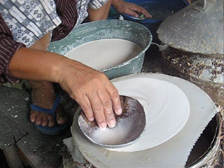
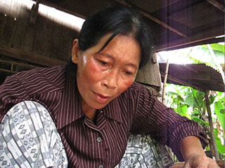
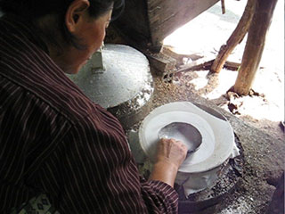
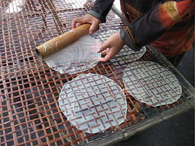
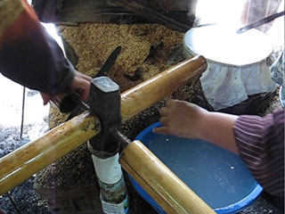

In the standard way to teach video shooting, students are instructed to shoot "wide, medium, tight." That means: For each subject of interest, get one shot that's far away enough to show everything (wide); get a second shot that is close enough to see what's going on (medium); get a third shot that's very close (tight).
Beginners can follow these instructions, but the results are not always good. Part of the trouble is that everyone judges these distances differently.
The five-shot method is more useful for beginners. By following it, the students bring back better shots. As a result, their first efforts are editing are also better. They learn more quickly to shoot usable video.
I have trained many journalists to use simple audio and video tools to tell stories.
The still images below show how the five-shot method is applied:
1) Hands (tight): For this first shooting exercise, your work will be easy if you choose a subject who is working with his or her hands and staying in one place. With a super-close shot of the hand action, you have something interesting to open with (to show at the beginning).
2) Face (tight): Who's performing the action we saw with the hands? An essential part of storytelling is to raise a question and then quickly answer it. Q: Whose hands? A: This person -- this face.
3) Hands and face together (medium): The next question in the viewer's mind is: What's going on here? A wider shot can answer that question very nicely. Note: Wider, but not truly wide. For online video, stay close.
4) Over the shoulder (medium): This shot does not always come out well, because sometimes we get too much shoulder, or too much of the back of the head. But trying it helps us learn how to be patient, and sometimes we also manage get a very good shot from it.
5) Something else (often not wide): After you've got the five shots specified above, work hard to come up with a fifth and different angle on the same subject. This is often the best shot, in my experience. It forces you to think creatively. Get low to the ground (as I did here) or stand on a table, for example.
For this small story (woman makes rice-paper crepes in her home), there were two other activities going on. These were performed by a second woman:
6) The helper laid each crepe on a large rattan screen. (When the screen was full, she carried it outside to dry in the sun and brought a new screen inside.)
7) Having shot the rattan screen action, I realized I needed a shot that clearly showed the way the helper collected each crepe from this rotating apparatus made with four tubes of bamboo.
I made only eight shots to tell this story; one of them was useless, so I discarded it.
I concentrated on the woman making the crepes, not on her helper. I never shot a close-up of the helper's face. I never followed her into the yard when she carried the rattan screen (in fact, that would have made a good subject for a second five-shot sequence).
You can download the seven unedited video clips here:
MVI_3133.avi 44 sec. (38.8 MB) > at Vimeo
MVI_3135.avi 25 sec. (22.2 MB) > at Vimeo
MVI_3136.avi 28 sec. (25.6 MB) > at Vimeo
MVI_3137.avi 32 sec. (28.9 MB) > at Vimeo
MVI_3138.avi 17 sec. (15.5 MB) > at Vimeo
MVI_3139.avi 22 sec. (19.6 MB) > at Vimeo
MVI_3140.avi 16 sec. (14.2 MB) > at Vimeo
To ensure that you can edit easily and well, always hold each shot for at least 10 seconds. You should literally count to 10, silently, after you begin recording the shot.
A shot starts when you press "Record" and ends when you pause or stop the recording.
Do not stop shooting just because you reach 10. OFTEN you will need to hold the shot longer than 10 seconds to capture the action you need to tell the story. The 10-second rule is a minimum.
A good example of that can be seen in this unedited clip (24 seconds), where I had framed the action perfectly but needed to WAIT until I had the complete activity recorded. In this case, the complete activity begins before the helper walks to the rattan screen (at the 15-second mark), and it ends after she has walked away again:
You see how the clip begins with the action already in progress -- the girl is in the middle of placing a crepe on the screen. The action I needed for a good shot (one that can be cut into a sequence easily) would begin at the beginning. So I simply held my shot and waited while she walked away, collected a new crepe, and returned -- giving me a complete action.
If you manage to capture a complete action cleanly, with a few seconds to cut out before it begins, and a few seconds to cut out after it ends, you will find it very easy to edit your video.
Sometimes beginners think that because many shots in the edited video are only 4 or 5 seconds long, it will be okay to hold a shot for only 5 or 6 seconds. NOT TRUE! You'll find that if you shoot that way, you'll have a lot of clips that are not usable. They begin too late (the action is already under way) or they end too early (the action is not completely finished yet).
Shots often have some "shake" at the beginning and/or the end. That must be cut out. So even when the action ends, DON'T BE TOO QUICK to press the button and end the clip. Give yourself some room for error, for shaking or other poor movement -- and then you can cut it out.
Incomplete shots (those that start late or end early) limit your choices in editing. When your choices are more limited, it's much harder to edit the video.
If something happens to ruin your shot before 10 seconds have passed (maybe someone walks in front of you, hiding the action), you don't need to pause or stop the recording. However, you must start over in your count. Start again at 1 and count silently to 10, because you need at least 10 continuous seconds of the activity or scene to use as raw material in your editing.
If you move the camera, likewise, you must start your count over at 1 and re-count to 10. The movement ruins the clean shot, the solid 10 seconds you need to get.
That's the 10-second rule.
All the materials on or linked to this page are protected by U.S. and international copyright law and may not be sold, or included in any product for sale, or changed for re-use in any manner. The video clips were shot in a village near Battambang, Cambodia in May 2008.